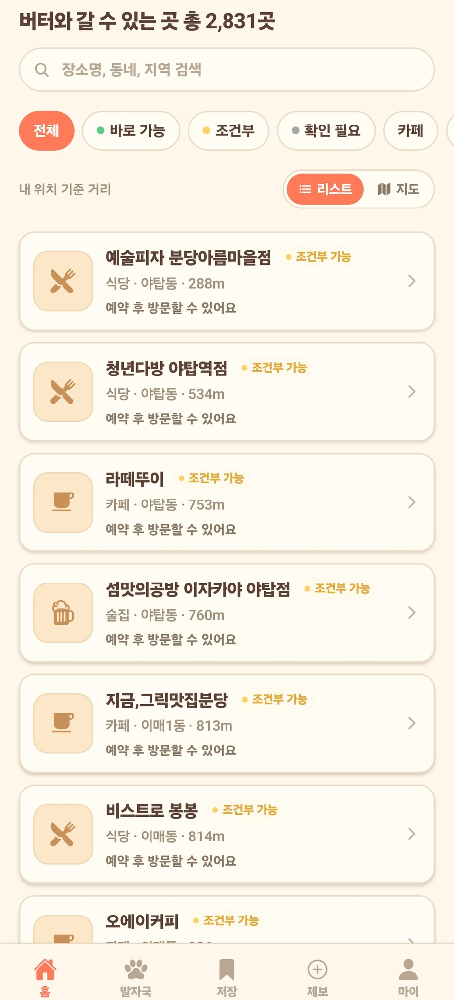
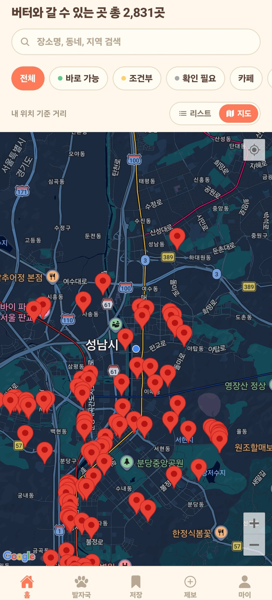
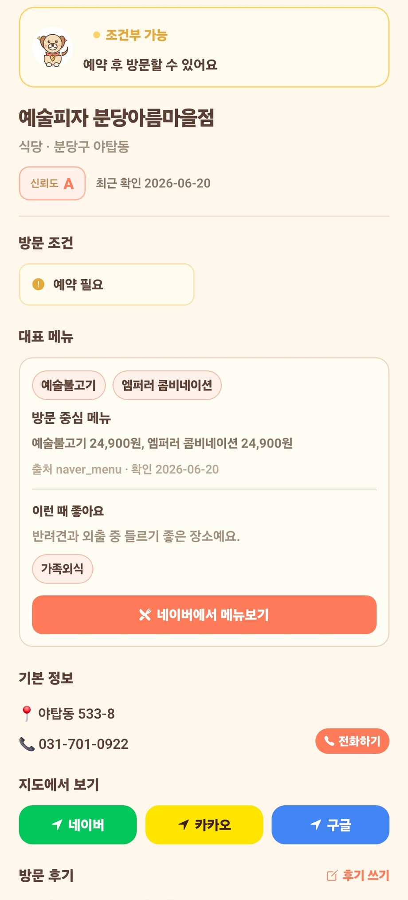
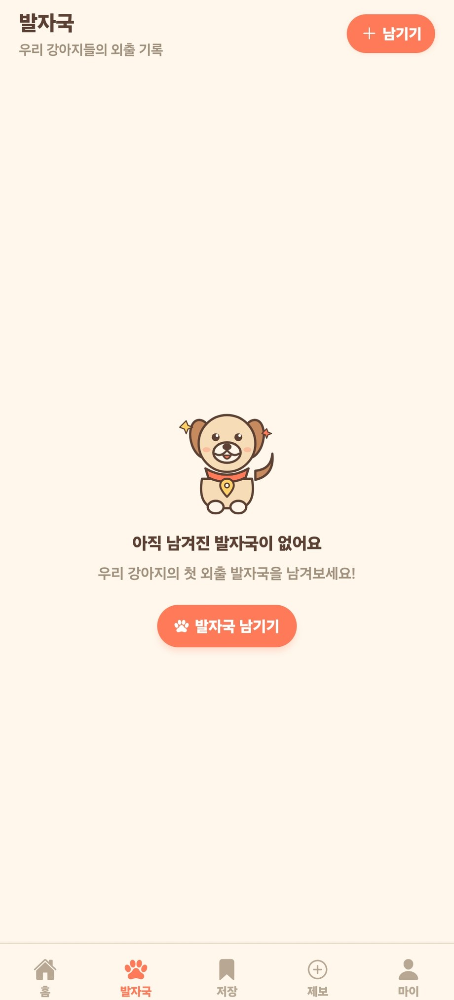

동반 가능 장소 리스트
반려견과 함께 갈 수 있는 식당, 카페, 장소를 카드형 리스트로 확인합니다.
개치테이블은 반려견과 함께 갈 수 있는 식당·카페·장소를 지도와 리스트로 찾고, 내 강아지와 방문 기록은 비공개 중심으로 정리하는 반려생활 지도 앱입니다.


무작정 검색하지 않고, 위치·카테고리·지도 보기로 오늘 갈 수 있는 장소를 차분하게 고릅니다.
반려견과 함께 갈 수 있는 식당, 카페, 장소를 카드형 리스트로 확인합니다.
현재 위치나 원하는 지역 주변의 장소를 지도 핀으로 빠르게 봅니다.
주소, 연락처, 지도 앱 연결, 메뉴/설명, 동반 관련 정보를 한 화면에서 봅니다.
방문 기억과 앨범은 내 공간에 남기고, 공개 피드처럼 흘려보내지 않습니다.
검색어와 카테고리로 후보를 좁힌 뒤, 지도에서 동선과 밀집도를 확인해 오늘 갈 곳을 고릅니다.
장소 상세에서 주소, 연락처, 소개, 메뉴, 외부 지도 연결을 확인하고 바로 이동할 수 있습니다.

개치테이블은 SNS처럼 모두에게 보여주는 공간보다, 내 강아지와 방문 기억을 조용히 정리하는 흐름을 우선합니다. 리뷰와 개인 앨범은 분리하고, 과한 공개 피드 없이 필요한 기록만 남깁니다.

리스트, 상세, 발자국, 지도 화면을 한 번에 확인하세요.
개치테이블에서 반려견 동반 가능 장소를 리스트와 지도에서 확인하고, 우리 강아지의 방문 기억은 조용히 남겨보세요.